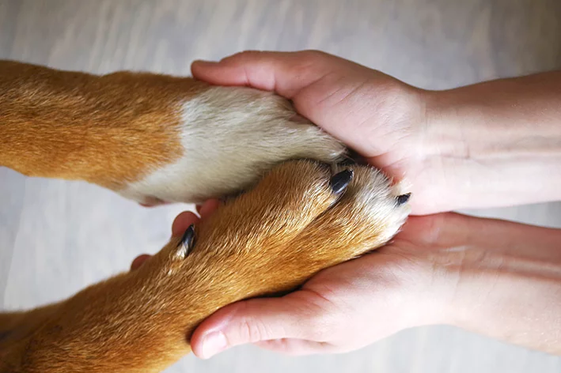
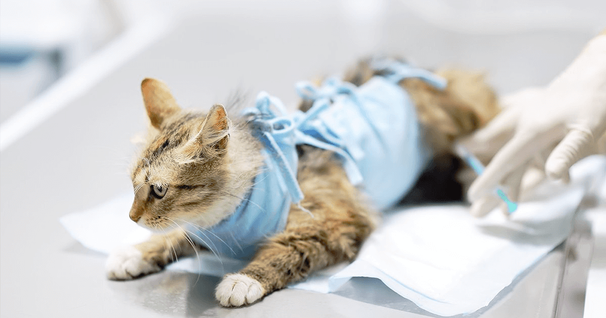
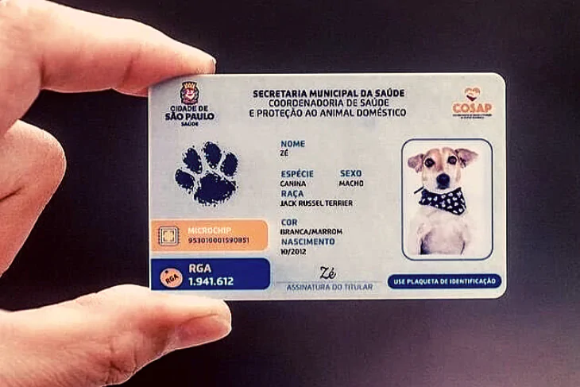
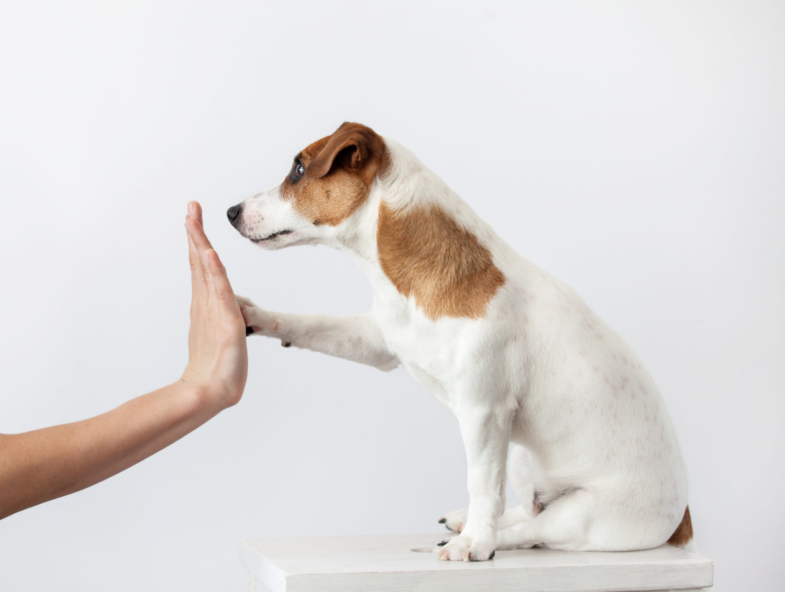

CUIDADOS PARA O SEU PET
Dicas para novos tutores
Alimentação:
Todo animal necessita de uma dieta de qualidade para manter a saúde em dia. O ideal é que o seu
pet coma somente a ração ou os alimentos recomendados para cada tipo de animal. Evite oferecer
qualquer tipo de alimento que não faz parte da dieta do animal.
Caso tenha dúvidas em relação a alimentação do seu pet, consulte um médico veterinário para ter maiores conhecimentos.
Caso tenha dúvidas em relação a alimentação do seu pet, consulte um médico veterinário para ter maiores conhecimentos.


Higiene:
Assim como todo ser humano, a higiene também é muito importante para manter a saúde do animal e
evitar problemas futuros. Obviamente, o animal não precisa de banhos todos os dias, mas é
importante que seu pet tenha uma frequência de banhos (de 15 em 15 dias, por exemplo) para
manter sua higiene.
Além disso, a tosa tanto a higiênica quanto a normal, é extremamente importante para os cuidados com seu bichinho.
Além disso, a tosa tanto a higiênica quanto a normal, é extremamente importante para os cuidados com seu bichinho.
Consultas com veterinário:
Periódicamente, é importante que seu animalzinho tenha consultas com um veterinário. Assim como
um ser humano, um check-up é o elemento pricipal para previnir e detectar doenças.


Posse Responsável de Animais:
Na adoção de animais de estimação, a posse responsável é essencial. Reflita sobre a
responsabilidade, escolha com consciência, cuide da saúde, alimentação e exercícios, garanta
segurança e identificação, opte pela castração e ofereça amor e companheirismo. Ao adotar com
responsabilidade, você constrói uma relação saudável e contribui para uma sociedade mais
empática
Faça a diferença na vida de um pet e adote com responsabilidade!
Faça a diferença na vida de um pet e adote com responsabilidade!
A Importância da Castração:
A castração é essencial para o bem-estar dos animais, evitando reprodução indesejada e
controlando a superpopulação. Além de promover a saúde e comportamento equilibrado, contribui
para uma sociedade mais responsável e compassiva. Optar pela castração é um ato de
responsabilidade social, economizando recursos e garantindo um futuro mais humano para os pets.


Identificação dos Animais:
A identificação dos animais desempenha um papel vital na adoção responsável. Além de facilitar o
reencontro em caso de perda e reduzir o abandono, a identificação permite conhecer o histórico
de saúde e comportamento do animal antes da adoção. É também uma exigência legal em muitas
regiões. Ao adotar um animal identificado, você contribui para sua segurança e bem-estar, além
de promover a conscientização sobre a importância da identificação para todos os animais de
estimação.
Importância da Socialização dos Animais:
A socialização é essencial para animais de estimação em processo de adoção. Ela estabelece
confiança, reduz o estresse, facilita a integração com a nova família e evita problemas
comportamentais. Além disso, fortalece o vínculo entre o animal e seus tutores, aumentando suas
chances de adoção bem-sucedida. A socialização deve ser feita de forma gradual e positiva,
respeitando as necessidades individuais de cada animal, para proporcionar uma transição suave
para um novo lar amoroso.
A socialização dos animais é um processo pelo qual os animais de estimação são expostos a uma variedade de estímulos, situações, pessoas e outros animais para que eles desenvolvam habilidades sociais, emocionais e comportamentais saudáveis. Esse processo geralmente ocorre em idade precoce, mas também pode ser realizado em animais mais velhos.
O que é a socialização dos animais?
A socialização dos animais é um processo pelo qual os animais de estimação são expostos a uma variedade de estímulos, situações, pessoas e outros animais para que eles desenvolvam habilidades sociais, emocionais e comportamentais saudáveis. Esse processo geralmente ocorre em idade precoce, mas também pode ser realizado em animais mais velhos.
